More Matplotlib#
A figure is how you actually see your data — and how you communicate it to everyone else. Matplotlib is the dominant plotting library in Python, and learning to drive it deliberately (rather than by trial and error) pays off every time you plot a temperature record, a map, or a scatter of measurements. In the previous notebook we made quick plots while learning NumPy; here we slow down to understand how Matplotlib is built.
The key idea is the Figure / Axes model: a Figure is the whole canvas, and each Axes is a single plot living on it. Once that clicks, everything else — subplots, labels, colors, 2-D fields, vector fields — follows from it. We’ll work through line plots and their styling, then the main ways to visualize 2-D data (imshow, pcolormesh, contour, quiver, streamplot).
Working through this notebook
This page is a Jupyter notebook. Download it using the ⬇ button in the top-right of the page (or copy-paste the cells into a fresh notebook), open it in your environment (JupyterLab on LEAP or Colab), and step through the cells. When you reach a Try it admonition, experiment in your own cells before moving on.
In-class assignment — 10 points
The “Try it” exercises in this notebook are part of your in-class assignment for this section. Complete them in your own copy of the notebook, push it to your week folder, and post the notebook link on the matching Courseworks assignment. (One 10-point assignment covers all the lecture notebooks in this section.)
from matplotlib import pyplot as plt
%matplotlib inline
Figure and Axes#
The figure is the highest level of organization of matplotlib objects. If we want, we can create a figure explicitly.
fig = plt.figure()
<Figure size 640x480 with 0 Axes>
fig = plt.figure(figsize=(13, 5))
<Figure size 1300x500 with 0 Axes>
To draw anything, the figure needs an axes inside it. We add one with fig.add_axes([left, bottom, width, height]) — the four numbers are in figure coordinates (0 to 1, where 0 is the left/bottom edge of the figure and 1 is the right/top). [0, 0, 1, 1] makes the axes fill the entire figure:
fig = plt.figure()
ax = fig.add_axes([0, 0, 1, 1])
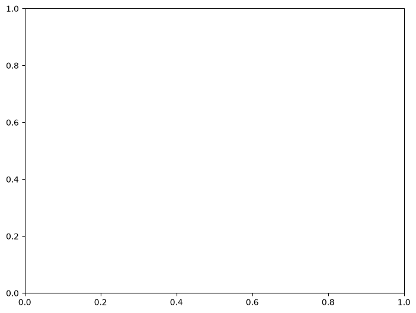
With a different bbox we can make the axes smaller — [0, 0, 0.5, 1] puts the axes on the left half of the figure:
fig = plt.figure()
ax = fig.add_axes([0, 0, 0.5, 1])
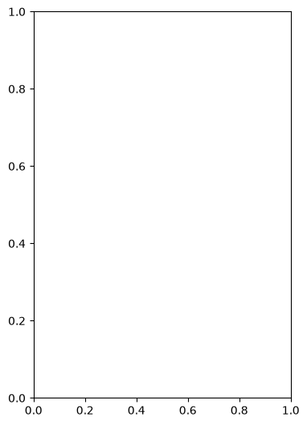
We can add multiple axes to one figure by calling add_axes with different bboxes:
fig = plt.figure()
ax1 = fig.add_axes([0, 0, 0.5, 1])
ax2 = fig.add_axes([0.5, 0, 0.3, 0.5], facecolor='g')
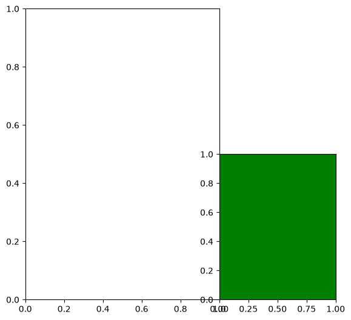
Subplots#
subplots is the standard way to create multiple axes in a regular grid. Pass nrows and ncols to lay out the grid — matplotlib returns a single Axes if there’s only one, or a NumPy array of Axes if there are several.
Calling subplots on a figure carves it up into a regular grid of axes — here, 2 rows × 3 columns:
fig = plt.figure()
axes = fig.subplots(nrows=2, ncols=3)
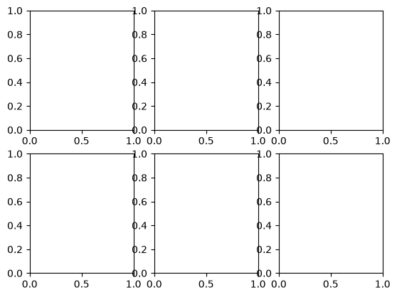
If we make the figure smaller, the axes labels will overlap — matplotlib doesn’t auto-resize them:
fig = plt.figure(figsize=(1, 1))
axes = fig.subplots(nrows=2, ncols=3)
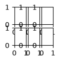
Notice that subplots(nrows=2, ncols=3) returned a 2D array of Axes objects — we can inspect it directly, or index into it like any NumPy array:
axes
array([[<Axes: >, <Axes: >, <Axes: >],
[<Axes: >, <Axes: >, <Axes: >]], dtype=object)
axes[0,0]
<Axes: >
There is a shorthand for doing this all at once.
Tip
This is our recommended way to create new figures! From here on, most cells will use the fig, ax = plt.subplots(...) pattern.
fig, ax = plt.subplots()
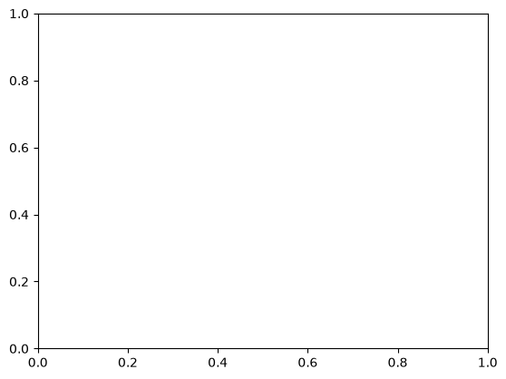
ax
<Axes: >
fig, axes = plt.subplots(ncols=2, figsize=(8, 4), subplot_kw={'facecolor': 'g'})
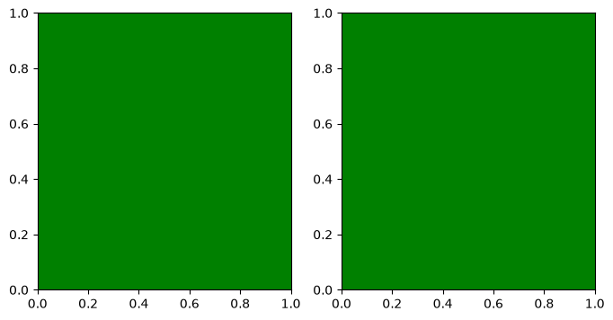
axes
array([<Axes: >, <Axes: >], dtype=object)
Try it
Use plt.subplots(nrows=2, ncols=2, figsize=(8, 8)) to create a 2×2 grid of axes. Print the shape of the returned axes object (it’s a 2D NumPy array of Axes), and access the top-right axes with axes[0, 1]. Then change figsize to (4, 4) and see how the figure size changes.
Drawing into Axes#
All plots are drawn into a specific axes. Matplotlib supports two styles for this — the implicit plt.plot(...) style (which uses the most recently created axes), and the explicit object-oriented style (ax.plot(...)) where you call methods on the axes directly. The OO style is much clearer once you have more than one axes on a figure, and it’s what we recommend throughout the rest of this course. (See the matplotlib coding style guide for more.)
Let’s create some data we’ll plot throughout the rest of this notebook — a smooth cosine and a higher-frequency sine on the same x-range:
import numpy as np
x = np.linspace(-np.pi, np.pi, 100)
y = np.cos(x)
z = np.sin(6*x)
plt.plot(x,y)
[<matplotlib.lines.Line2D at 0x7f995d1fbd90>]
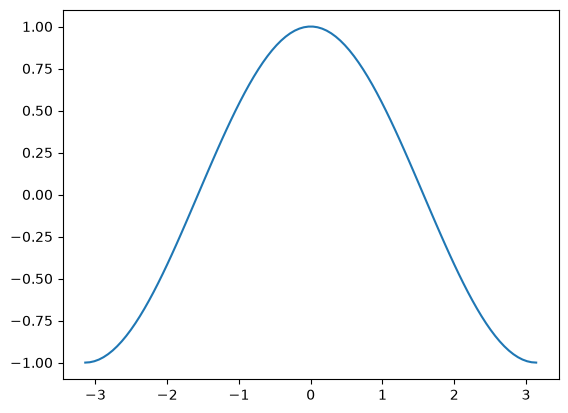
fig, ax = plt.subplots()
plt.plot(x,y)
[<matplotlib.lines.Line2D at 0x7f995d0f7a90>]
ax
<Axes: >
ax.plot(x, y)
[<matplotlib.lines.Line2D at 0x7f995d279c10>]
fig
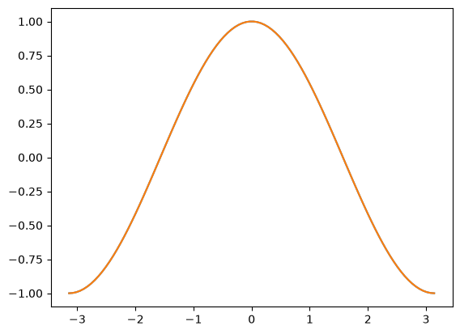
This does the same thing as
plt.plot(x, y)
[<matplotlib.lines.Line2D at 0x7f995cf225d0>]
This starts to matter when we have multiple axes to worry about.
fig, axes = plt.subplots(figsize=(8, 4), ncols=2)
ax0, ax1 = axes
ax0.plot(x, y)
ax1.plot(x, z)
[<matplotlib.lines.Line2D at 0x7f995ce76dd0>]
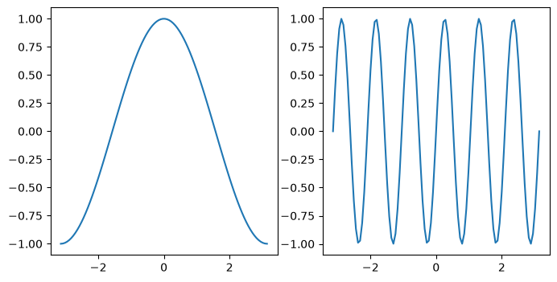
Try it
Create a figure with two side-by-side axes (fig, axes = plt.subplots(ncols=2, figsize=(8, 4))). Plot np.sin(x) on the left axes and np.cos(x) on the right, using the explicit axes[0].plot(...) / axes[1].plot(...) pattern.
Labeling Plots#
A plot without labels is hard to interpret. Each Axes object has set_xlabel, set_ylabel, and set_title methods that take a string. When axes have their own labels and titles, they can crowd each other on the figure — plt.tight_layout() fixes the spacing automatically.
fig, axes = plt.subplots(figsize=(8, 4), ncols=2)
ax0, ax1 = axes
ax0.plot(x, y)
ax0.set_xlabel('x')
ax0.set_ylabel('y')
ax0.set_title('x vs. y')
ax1.plot(x, z)
ax1.set_xlabel('x')
ax1.set_ylabel('z')
ax1.set_title('x vs. z')
# squeeze everything in
plt.tight_layout()
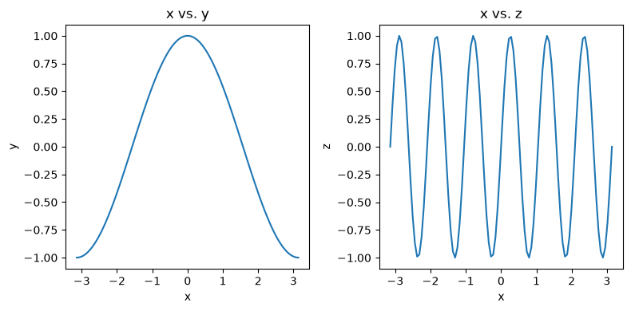
Try it
Take the two-axes figure from the previous Try-it. Add x/y labels and a title to each axes, then call plt.tight_layout() so the labels don’t get clipped when the figure is rendered.
Customizing Line Plots#
Once you have a basic plot, you’ll usually want to control its appearance: which color the line is, whether it’s solid or dashed, whether to mark each data point, and how the axes themselves are styled. The sub-sections below walk through the main knobs.
There are several ways to plot two (or more) datasets on the same axes. The first style passes alternating x, y pairs to a single plot call:
fig, ax = plt.subplots()
ax.plot(x, y, x, z)
[<matplotlib.lines.Line2D at 0x7f995cf3c350>,
<matplotlib.lines.Line2D at 0x7f995cde9b50>]
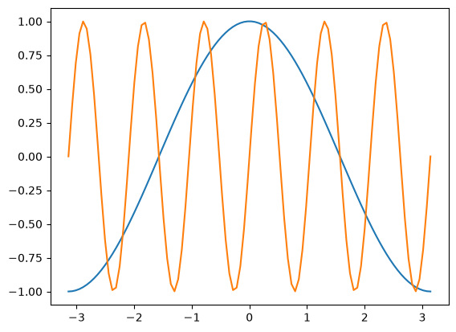
The second style calls plot separately for each dataset. The result is the same — matplotlib automatically assigns a different color to each line from a default cycle (more on that below):
fig, ax = plt.subplots()
ax.plot(x, y)
ax.plot(x, z)
[<matplotlib.lines.Line2D at 0x7f995cc7dbd0>]
fig, ax = plt.subplots()
ax.plot(x, z)
ax.plot(x, y)
[<matplotlib.lines.Line2D at 0x7f995cc477d0>]
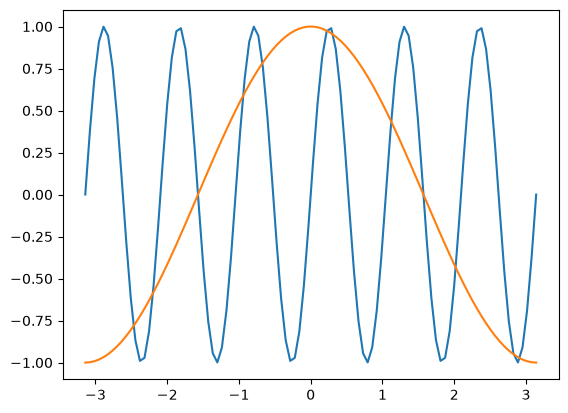
It’s simple to switch axes
fig, ax = plt.subplots()
ax.plot(y, x, z, x)
[<matplotlib.lines.Line2D at 0x7f995cb4b4d0>,
<matplotlib.lines.Line2D at 0x7f995cb1ce50>]
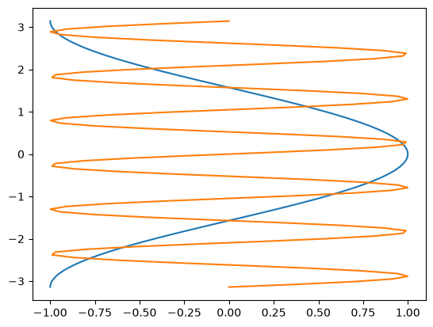
A “parametric” graph:
fig, ax = plt.subplots()
ax.plot(y, z)
[<matplotlib.lines.Line2D at 0x7f995d007250>]
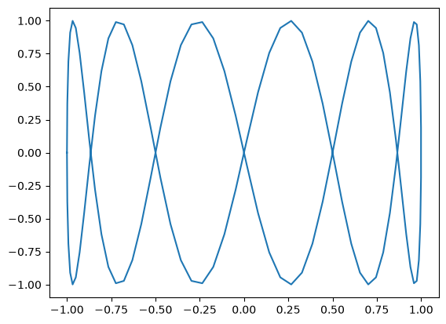
Line Styles#
fig, axes = plt.subplots(figsize=(16, 5), ncols=3)
axes[0].plot(x, y, linestyle='dashed')
axes[0].plot(x, z, linestyle='--')
axes[1].plot(x, y, linestyle='dotted')
axes[1].plot(x, z, linestyle=':')
axes[2].plot(x, y, linestyle='dashdot', linewidth=5)
axes[2].plot(x, z, linestyle='-.', linewidth=0.5)
[<matplotlib.lines.Line2D at 0x7f995cab2690>]
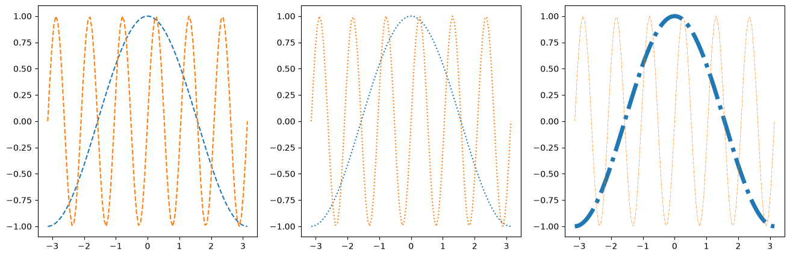
Colors#
As described in the colors documentation, there are some special codes for commonly used colors:
b: blue
g: green
r: red
c: cyan
m: magenta
y: yellow
k: black
w: white
fig, ax = plt.subplots()
ax.plot(x, y, color='k')
ax.plot(x, z, color='r')
[<matplotlib.lines.Line2D at 0x7f995c663fd0>]
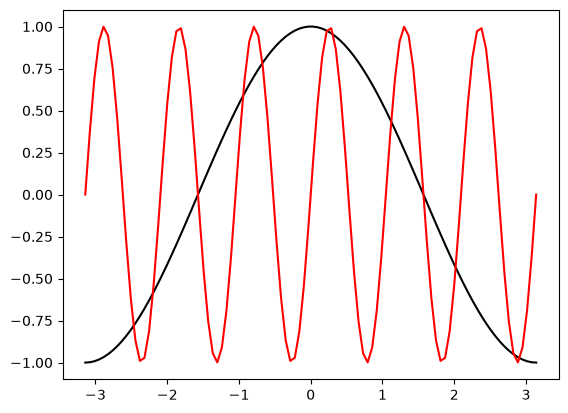
Other ways to specify colors:
fig, axes = plt.subplots(figsize=(16, 5), ncols=3)
# grayscale
axes[0].plot(x, y, color='0.8')
axes[0].plot(x, z, color='0.2')
# RGB tuple
axes[1].plot(x, y, color=(1, 0, 0.7))
axes[1].plot(x, z, color=(0, 0.4, 0.3))
# HTML hex code
axes[2].plot(x, y, color='#00dcba')
axes[2].plot(x, z, color='#b029ee')
[<matplotlib.lines.Line2D at 0x7f995c948910>]
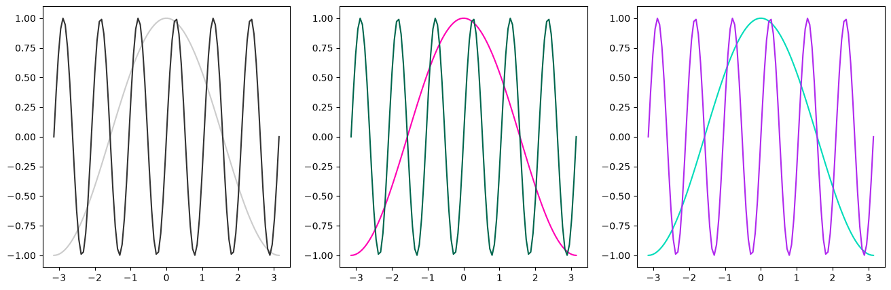
There is a default color cycle built into matplotlib.
You can inspect the default cycle directly. It’s stored in matplotlib’s runtime config (rcParams):
plt.rcParams['axes.prop_cycle']
| 'color' |
|---|
| (0.12156862745098039, 0.4666666666666667, 0.7058823529411765) |
| (1.0, 0.4980392156862745, 0.054901960784313725) |
| (0.17254901960784313, 0.6274509803921569, 0.17254901960784313) |
| (0.8392156862745098, 0.15294117647058825, 0.1568627450980392) |
| (0.5803921568627451, 0.403921568627451, 0.7411764705882353) |
| (0.5490196078431373, 0.33725490196078434, 0.29411764705882354) |
| (0.8901960784313725, 0.4666666666666667, 0.7607843137254902) |
| (0.4980392156862745, 0.4980392156862745, 0.4980392156862745) |
| (0.7372549019607844, 0.7411764705882353, 0.13333333333333333) |
| (0.09019607843137255, 0.7450980392156863, 0.8117647058823529) |
If you call plot more times than there are colors in the cycle, matplotlib wraps around — colors start repeating:
fig, ax = plt.subplots(figsize=(12, 10))
for factor in np.linspace(0.2, 1, 11):
ax.plot(x, factor*y)
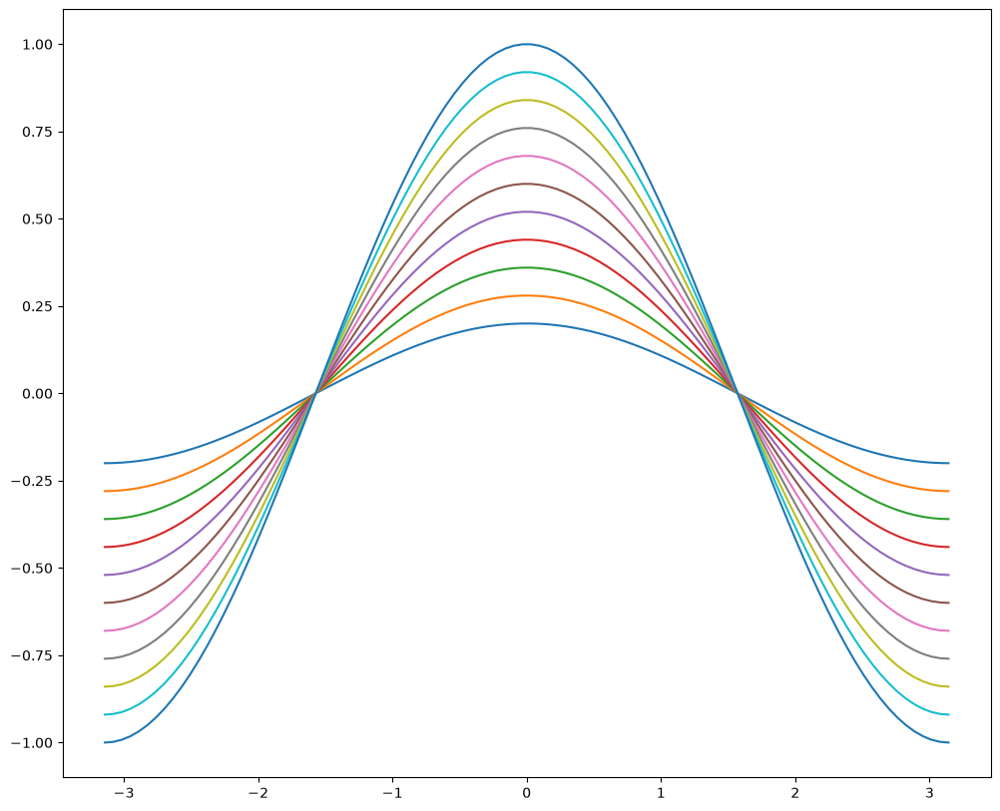
Markers#
There are lots of different markers availabile in matplotlib!
fig, axes = plt.subplots(figsize=(12, 5), ncols=2)
axes[0].plot(x[:20], y[:20], marker='.')
axes[0].plot(x[:20], z[:20], marker='o')
axes[1].plot(x[:20], z[:20], marker='^',
markersize=10, markerfacecolor='r',
markeredgecolor='k')
[<matplotlib.lines.Line2D at 0x7f995d3c9750>]
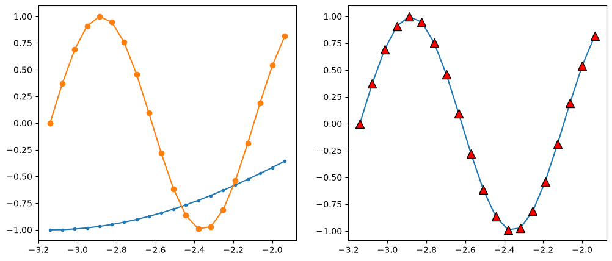
Label, Ticks, and Gridlines#
fig, ax = plt.subplots(figsize=(12, 7))
ax.plot(x, y)
ax.set_xlabel('x')
ax.set_ylabel('y')
ax.set_title(r'A complicated math function: $f(x) = \cos(x)$')
ax.set_xticks(np.pi * np.array([-1, 0, 1]))
ax.set_xticklabels([r'$-\pi$', '0', r'$\pi$'])
ax.set_yticks([-1, 0, 1])
ax.set_yticks(np.arange(-1, 1.1, 0.2), minor=True)
ax.grid(which='minor', linestyle='--')
ax.grid(which='major', linewidth=2)
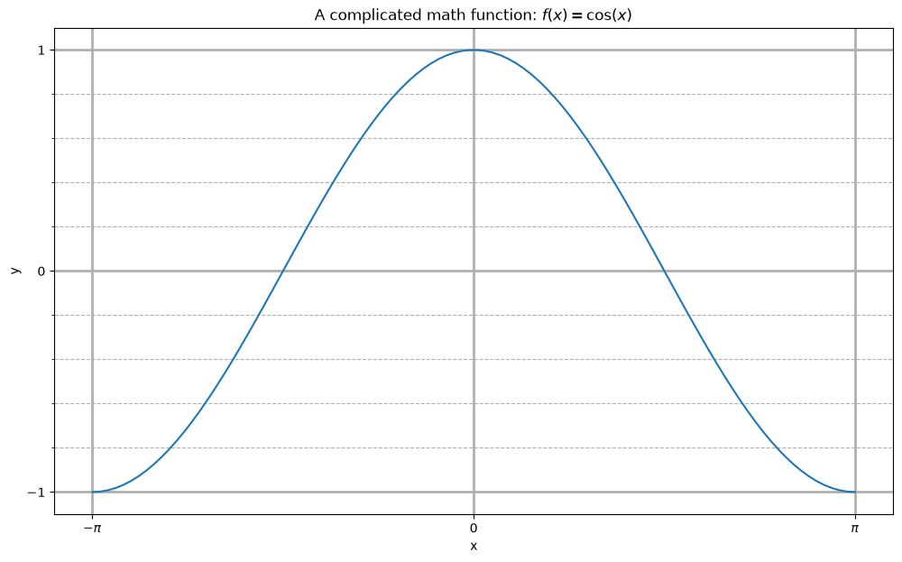
Axis Limits#
fig, ax = plt.subplots()
ax.plot(x, y, x, z)
ax.set_xlim(-5, 5)
ax.set_ylim(-3, 3)
(-3.0, 3.0)
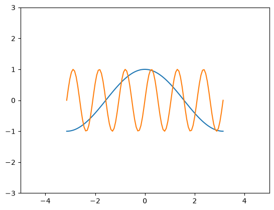
Text Annotations#
fig, ax = plt.subplots()
ax.plot(x, y)
ax.text(-3, 0.3, 'hello world')
ax.annotate('the maximum', xy=(0, 1),
xytext=(0, 0), arrowprops={'facecolor': 'k'})
Text(0, 0, 'the maximum')
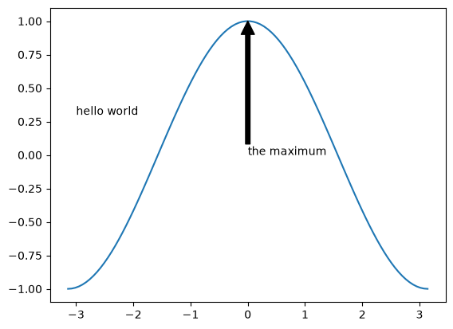
Try it
Plot y and z on the same axes with different styles — say, y as a dashed red line and z as a dotted blue line with circle markers. Then customize:
set x-ticks at
[-π, -π/2, 0, π/2, π]usingnp.pi * np.array(...), with LaTeX labels (r'$-\pi$'etc.).turn on a major and minor grid.
add a title using LaTeX math, e.g.
r'$y = \cos(x)$ and $z = \sin(6x)$'.
Other 1D Plots#
Not every 1D plot is a line plot. Two of the most common alternatives are scatter plots (each data point is its own marker — useful for showing relationships between two variables) and bar plots (for comparing values across discrete categories).
Scatter Plots#
fig, ax = plt.subplots()
splot = ax.scatter(y, z, c=x, s=(100*z**2 + 5))
fig.colorbar(splot)
<matplotlib.colorbar.Colorbar at 0x7f995c8f2b90>
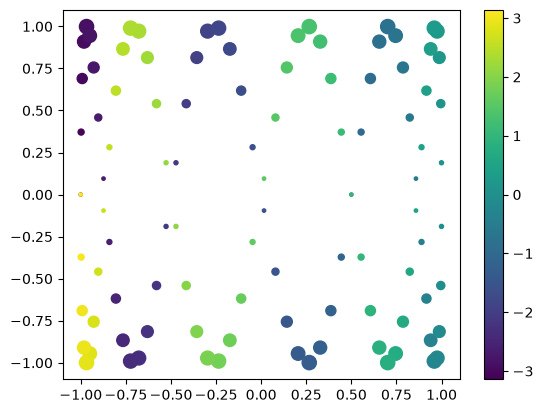
Bar Plots#
labels = ['first', 'second', 'third']
values = [10, 5, 30]
fig, axes = plt.subplots(figsize=(10, 5), ncols=2)
axes[0].bar(labels, values)
axes[1].barh(labels, values)
<BarContainer object of 3 artists>
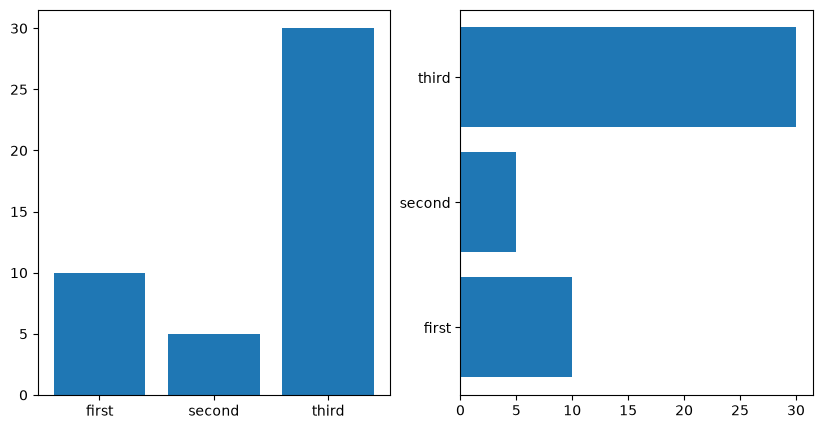
Try it
Create a scatter plot of y against z, coloring each point by its x value (c=x), and add a colorbar. Then make a horizontal bar chart (ax.barh) of three labelled values of your choice.
2D Plotting Methods#
For 2D data — gridded values like f(x, y) — matplotlib provides several ways to visualize. The right choice depends on whether your data is on a regular grid (use imshow or pcolormesh), whether you want isolines (contour / contourf), or whether you have vector data like flow fields (quiver / streamplot).
imshow#
imshow displays values directly as a colored image. It treats the input as pixel data with no coordinates — pass origin='lower' if you want y=0 at the bottom (the usual convention for plots).
x1d = np.linspace(-2*np.pi, 2*np.pi, 100)
y1d = np.linspace(-np.pi, np.pi, 50)
xx, yy = np.meshgrid(x1d, y1d)
f = np.cos(xx) * np.sin(yy)
print(f.shape)
(50, 100)
fig, ax = plt.subplots(figsize=(12,4), ncols=2)
ax[0].imshow(f)
ax[1].imshow(f, origin='lower')
<matplotlib.image.AxesImage at 0x7f99595774d0>
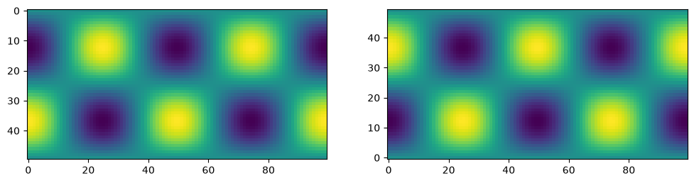
pcolormesh#
pcolormesh is like imshow but uses explicit x/y coordinates, so you can plot on non-uniform grids and the axes show real-world units.
fig, ax = plt.subplots(ncols=2, figsize=(12, 5))
pc0 = ax[0].pcolormesh(x1d, y1d, f)
pc1 = ax[1].pcolormesh(xx, yy, f)
fig.colorbar(pc0, ax=ax[0])
fig.colorbar(pc1, ax=ax[1])
<matplotlib.colorbar.Colorbar at 0x7f99594e8390>
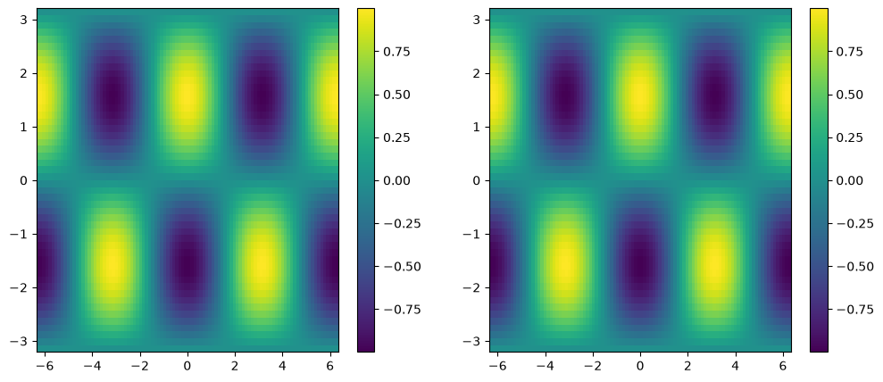
When pcolormesh is given an (N, M) value array along with (N, M) x/y coordinates, it actually drops the last row and column of the values — only the first (N-1, M-1) are drawn. Slicing the values explicitly with [:-1, :-1] produces the same picture:
x_sm, y_sm, f_sm = xx[:10, :10], yy[:10, :10], f[:10, :10]
fig, ax = plt.subplots(figsize=(12,5), ncols=2)
ax[0].pcolormesh(x_sm, y_sm, f_sm, edgecolors='k')
ax[1].pcolormesh(x_sm, y_sm, f_sm[:-1, :-1], edgecolors='k')
<matplotlib.collections.QuadMesh at 0x7f995939df50>
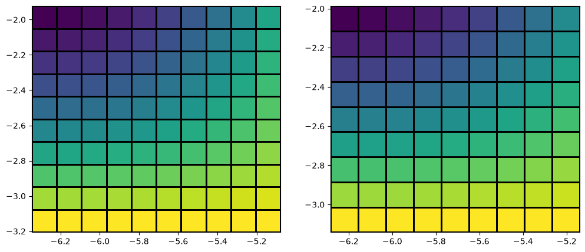
y_distorted = y_sm*(1 + 0.1*np.cos(6*x_sm))
plt.figure(figsize=(12,6))
plt.pcolormesh(x_sm, y_distorted, f_sm[:-1, :-1], edgecolors='w')
plt.scatter(x_sm, y_distorted, c='k')
<matplotlib.collections.PathCollection at 0x7f995c64f6d0>
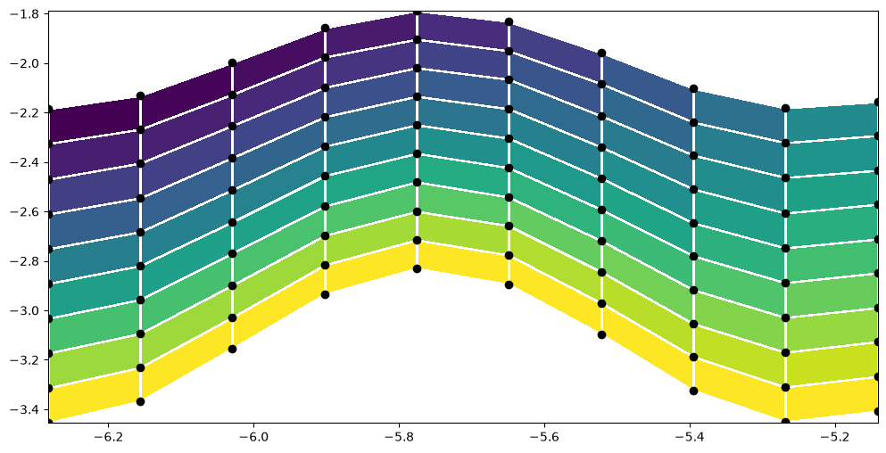
contour / contourf#
contour draws isolines (lines of constant value); contourf fills the regions between them.
Unlike pcolormesh, contour works equally well with 1D coordinate arrays or with 2D meshgrid arrays — both produce the same picture:
fig, ax = plt.subplots(figsize=(12, 5), ncols=2)
ax[0].contour(x1d, y1d, f)
ax[1].contour(xx, yy, f)
<matplotlib.contour.QuadContourSet at 0x7f9958d5be50>
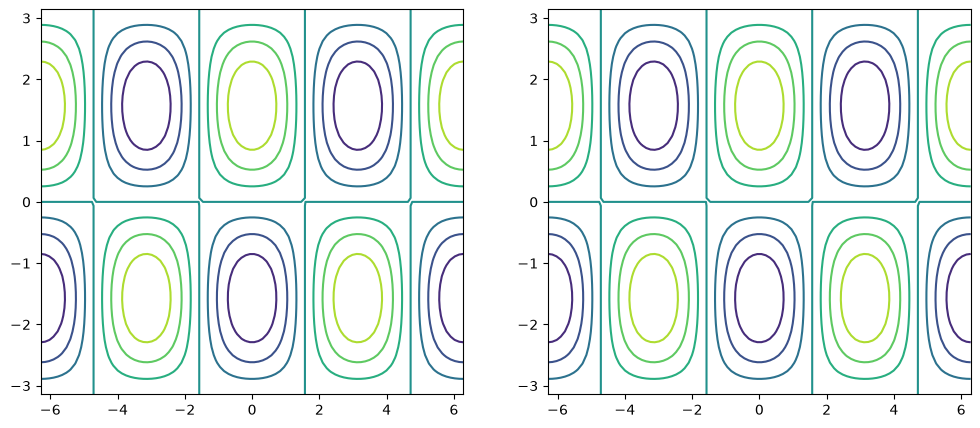
fig, ax = plt.subplots(figsize=(12, 5), ncols=2)
c0 = ax[0].contour(xx, yy, f, 5)
c1 = ax[1].contour(xx, yy, f, 20)
plt.clabel(c0, fmt='%2.1f')
plt.colorbar(c1, ax=ax[1])
<matplotlib.colorbar.Colorbar at 0x7f995c97e9d0>
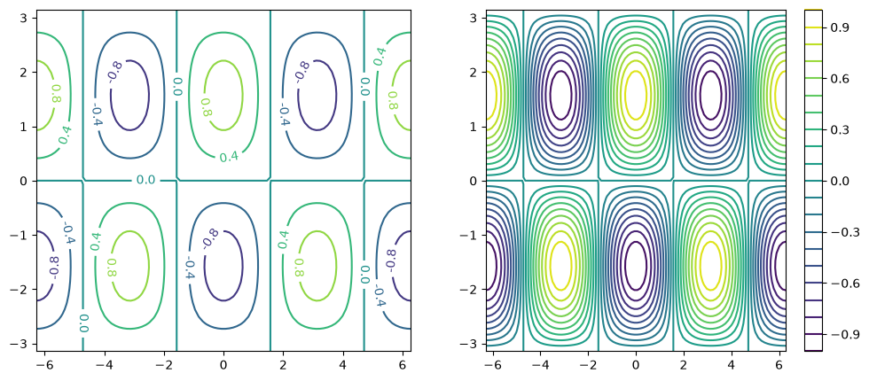
fig, ax = plt.subplots(figsize=(12, 5), ncols=2)
clevels = np.arange(-1, 1, 0.2) + 0.1
cf0 = ax[0].contourf(xx, yy, f, clevels, cmap='RdBu_r', extend='both')
cf1 = ax[1].contourf(xx, yy, f, clevels, cmap='inferno', extend='both')
fig.colorbar(cf0, ax=ax[0])
fig.colorbar(cf1, ax=ax[1])
<matplotlib.colorbar.Colorbar at 0x7f99591adb50>
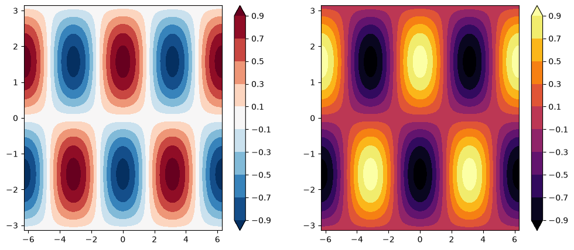
quiver#
quiver plots a vector field as arrows — useful for flow data like winds, ocean currents, or gradients.
u = -np.cos(xx) * np.cos(yy)
v = -np.sin(xx) * np.sin(yy)
fig, ax = plt.subplots(figsize=(12, 7))
ax.contour(xx, yy, f, clevels, cmap='RdBu_r', extend='both', zorder=0)
ax.quiver(xx[::4, ::4], yy[::4, ::4],
u[::4, ::4], v[::4, ::4], zorder=1)
<matplotlib.quiver.Quiver at 0x7f995906bad0>
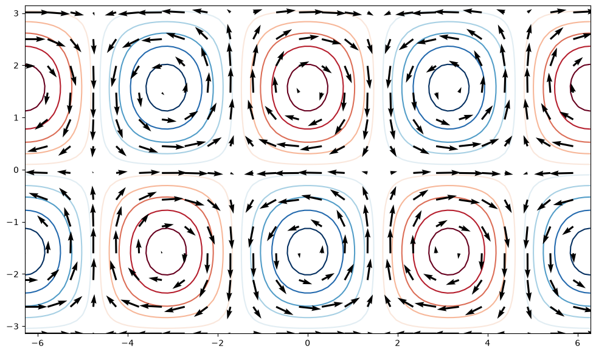
streamplot#
streamplot traces flow lines through a vector field — useful for visualizing turbulent flow or current patterns.
fig, ax = plt.subplots(figsize=(12, 7))
ax.streamplot(xx, yy, u, v, density=2, color=(u**2 + v**2))
<matplotlib.streamplot.StreamplotSet at 0x7f9958f17050>
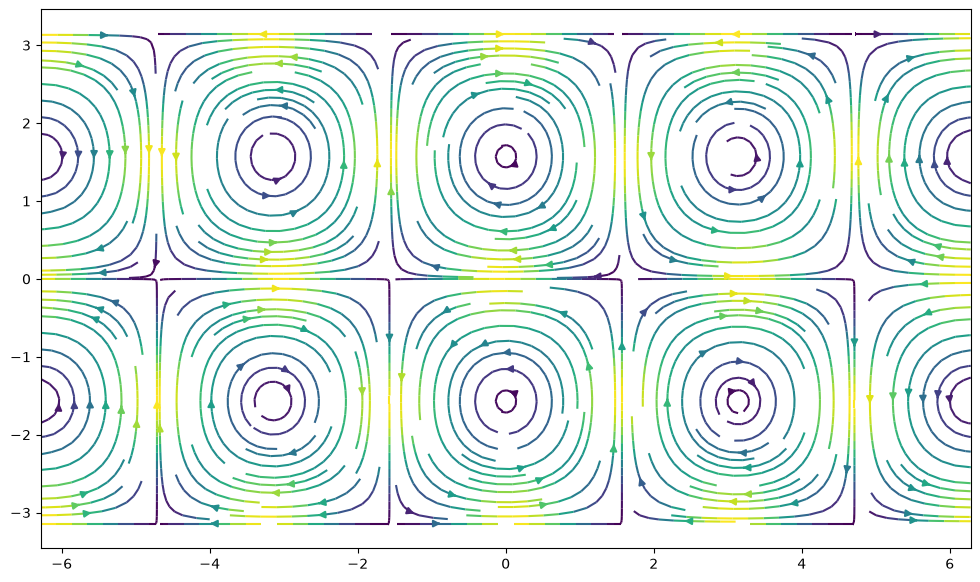
Try it
Compute a 2D Gaussian: f = np.exp(-(xx**2 + yy**2)) on a meshgrid. Make a figure with three subplots showing it via pcolormesh, contourf, and imshow(..., origin='lower'). Give each subplot its own colorbar.
Recap#
You’ve now seen how Matplotlib is put together and the main tools for using it:
The Figure / Axes model — a Figure is the canvas; each Axes is one plot, created with
plt.subplots()and drawn into explicitly.Line plots and styling — colors, line styles, markers, labels, ticks, gridlines, axis limits, and text annotations.
Other 1-D plots — scatter and bar charts.
2-D fields —
imshow,pcolormesh,contour/contourffor scalar fields, andquiver/streamplotfor vector fields — the building blocks of climate maps.
With NumPy and Matplotlib in hand, you’re ready for pandas, where these arrays gain labels and become tables you can slice, group, and analyze.